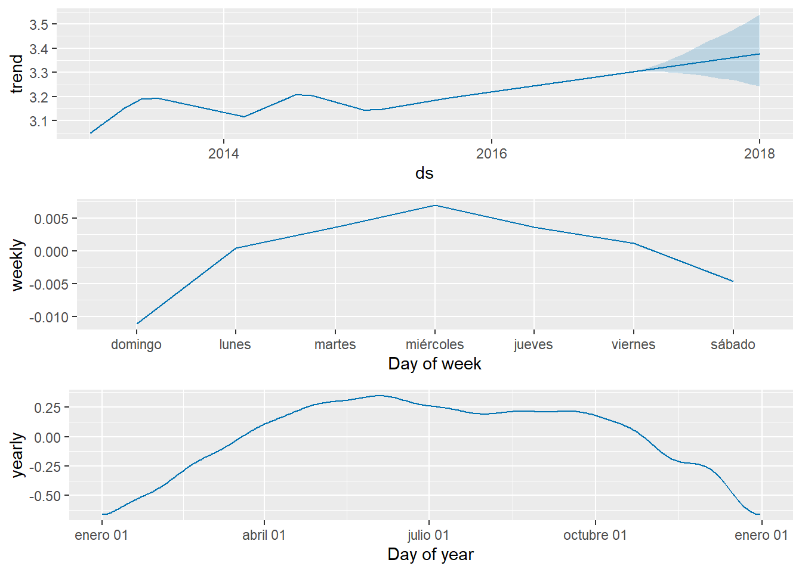
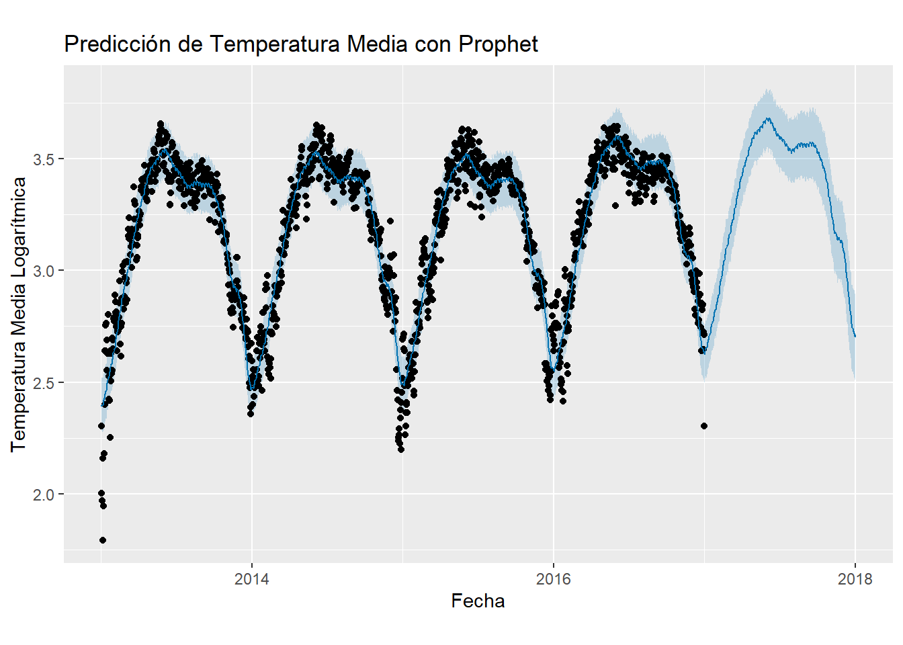

Chapter 7 Modulo 2 - Unidad 3
# Crear un DataFrame para las fechas futuras
future <- make_future_dataframe(prophet_model, periods = 365) # Predice para un año más
# Realizar la predicción
forecast <- predict(prophet_model, future)
# Visualización de las predicciones
prophet_plot_components(prophet_model, forecast) Tendencia (Trend):
La primera gráfica muestra la tendencia general de la serie temporal. Se observa un aumento gradual de la temperatura media logarítmica a lo largo del tiempo.
Estacionalidad Semanal (Weekly Seasonality):
La segunda gráfica muestra la estacionalidad semanal. Se observa que los miércoles tienden a ser ligeramente más cálidos en comparación con otros días de la semana.
Estacionalidad Anual (Yearly Seasonality):
La tercera gráfica muestra la estacionalidad anual. Se puede ver que las temperaturas tienden a ser más altas alrededor de julio y más bajas alrededor de enero, lo cual es consistente con los patrones climáticos estacionales.
# Plotear las predicciones
plot(prophet_model, forecast) +
labs(title = "Predicción de Temperatura Media con Prophet",
x = "Fecha", y = "Temperatura Media Logarítmica")
Datos Históricos:
- Los puntos negros representan los datos históricos de la temperatura media logarítmica. Observamos patrones estacionales anuales claramente definidos con picos en los meses de verano y valles en los meses de invierno.
Predicciones del Modelo:
- La línea azul muestra las predicciones del modelo Prophet. Las áreas sombreadas en azul claro alrededor de la línea de predicción representan los intervalos de confianza de las predicciones. Estos intervalos nos dan una idea de la incertidumbre en las predicciones.
Consistencia del Modelo:
- La línea de predicción sigue de cerca los datos históricos, lo que indica que el modelo Prophet ha capturado bien la estacionalidad y la tendencia de la serie temporal.
- Las predicciones para el futuro (a partir de 2017) muestran una tendencia continua con el mismo patrón estacional observado en los datos históricos.
7.1 Justificación del Uso de Prophet
El uso de Prophet es justificado debido a varias razones:
- Captura de Estacionalidades Complejas:
Prophet es capaz de capturar estacionalidades múltiples (diaria, semanal, anual) y permite la incorporación de efectos de festivos o eventos especiales.
- Robustez a Datos Faltantes y Outliers:
Es robusto frente a datos faltantes y outliers, lo que lo hace adecuado para datos reales que pueden tener estos problemas.
- Facilidad de Uso y Interpretabilidad:
La implementación es sencilla y la interpretación de los resultados es intuitiva, con componentes de tendencia y estacionalidad claramente definidos.
- Predicción a Largo Plazo:
Es adecuado para predicciones a largo plazo debido a su capacidad para modelar tendencias no lineales y estacionalidades recurrentes.
- Comparación con Otros Modelos:
Comparado con otros modelos como ARIMA, Prophet ofrece una metodología complementaria que es menos sensible a la necesidad de diferenciar los datos para lograr la estacionaridad.